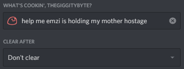
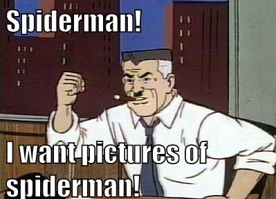

Frequently Asked Questions
I've updated from an old version to the latest version and my project won't build!
Please read the latest migration article to see a list of changes, as major version releases will usually have several breaking changes.
Code I copied from an article isn't compiling or working as expected. Why?
Please use the code snippets as a reference; don't blindly copy-paste code!
The snippets of code in the articles are meant to serve as examples to help you understand how to use a part of the library. Although most will compile and work at the time of writing, changes to the library over time can make some snippets obsolete. Many issues can be resolved with Intellisense by searching for similarly named methods and verifying method parameters.
I'm targeting Mono and have exceptions, crashes, or other problems.
As mentioned in the preamble, the Mono runtime is inherently unstable and has numerous flaws. Because of this we do not support Mono in any way, nor will we support any other projects which use it.
Instead, we recommend using either the latest LTS release or most recent stable version of .NET.
Connecting to a voice channel with VoiceNext will either hang or throw an exception.
To troubleshoot, please ensure that:
- You are using the latest version of DSharpPlus.
- You have properly enabled VoiceNext with your instance of @DSharpPlus.DiscordClient.
- You are not using VoiceNext in an event handler.
- You have opus and libsodium available in your target environment.
Why am I getting heartbeat skipped message in my console?
There are two possible reasons:
Connection issue between your bot application and Discord.
Check your internet connection and ensure that the machine your bot is hosted on has a stable internet connection. If your local network has no issues, the problem could be with either Discord or Cloudfare. In which case, it's out of your control.
Complex, long-running code in an event handler.
Any event handlers that have the potential to run for more than a few seconds could cause a deadlock, and cause several heartbeats to be skipped. Please take a look at our short article on handling DSharpPlus exceptions to learn how to avoid this.
Why am I getting a 4XX error and how can I fix it?
| HTTP Error Code | Cause | Resolution |
|---|---|---|
401 |
Invalid token. | Verify your token and make sure no errors were made. The client secret found on the 'general information' tab of your application page is not your token. |
403 |
Not enough permissions. | Verify permissions and ensure your bot account has a role higher than the target user. Administrator permissions do not bypass the role hierarchy. |
404 |
Requested object not found. | This usually means the entity does not exist. You should reattempt then inform your user. |
I cannot modify a specific user or role. Why is this?
In order to modify a user, the highest role of your bot account must be higher than the target user. Changing the properties of a role requires that your bot account have a role higher than that role.
Does CommandsNext support dependency injection?
It does! Please take a look at our article on the subject.
Can I use a user token?
Automating a user account is against Discord's Terms of Service and is not supported by DSharpPlus.
How can I set a custom status?
If you mean a true custom status like this:

No, you cannot. Discord does not allow bots to use custom statuses.
However, if you meant an activity like this:
You can use either of the following
- The overload for @DSharpPlus.DiscordClient.UpdateStatusAsync(DSharpPlus.Entities.DiscordActivity,System.Nullable{DSharpPlus.Entities.UserStatus},System.Nullable{System.DateTimeOffset}) which accepts a @DSharpPlus.Entities.DiscordActivity.
- The overload for @DSharpPlus.DiscordClient.UpdateStatusAsync(DSharpPlus.Entities.DiscordActivity,System.Nullable{DSharpPlus.Entities.UserStatus},System.Nullable{System.DateTimeOffset}) OR @DSharpPlus.DiscordShardedClient.UpdateStatusAsync(DSharpPlus.Entities.DiscordActivity,System.Nullable{DSharpPlus.Entities.UserStatus},System.Nullable{System.DateTimeOffset}) (for the sharded client) at any point after
Readyhas been fired.
Am I able to retrieve a @DSharpPlus.Entities.DiscordRole by name?
Yes. Use LINQ on the @DSharpPlus.Entities.DiscordGuild.Roles property of your instance of @DSharpPlus.Entities.DiscordGuild and compare against the @DSharpPlus.Entities.DiscordRole.Name of each @DSharpPlus.Entities.DiscordRole.
Why are you using Newtonsoft.Json when <xref:System.Text.Json> is available?
Yes, <xref:System.Text.Json> is available to use, and we aim to use <xref:System.Text.Json> in DSharpPlus v5. Because of the large effort associated with switching, v4 will continue to use Newtonsoft.Json
Why the hell are my events not firing?
This is because since version 8 of the Discord API, @DSharpPlus.DiscordIntents are required to be enabled on @DSharpPlus.DiscordConfiguration and the Discord Application Portal. We have an article that covers all that has to be done to set this up.
Where are my pictures of spiderman?
